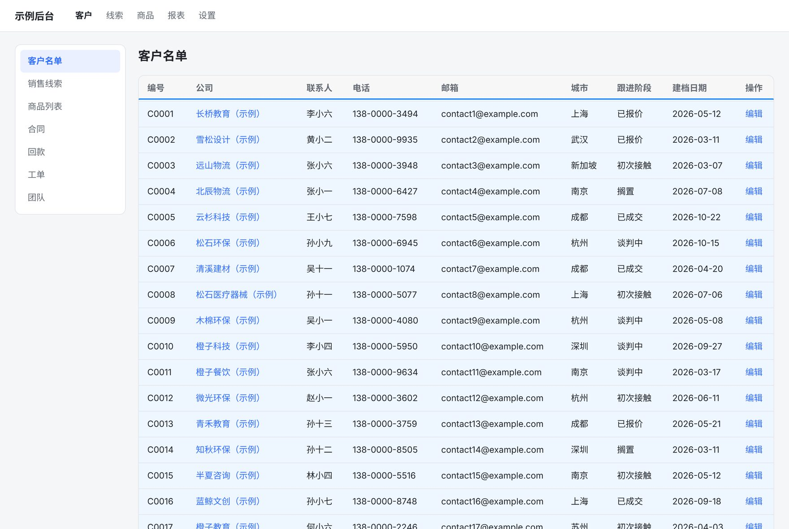
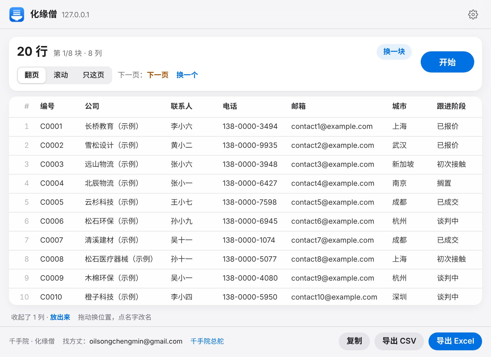
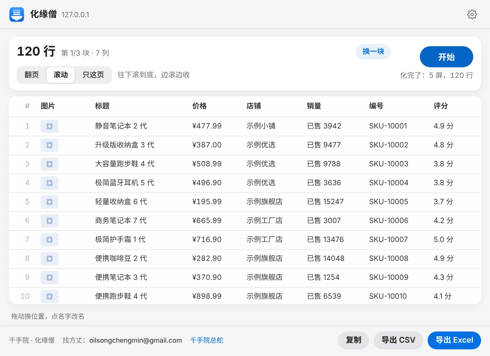
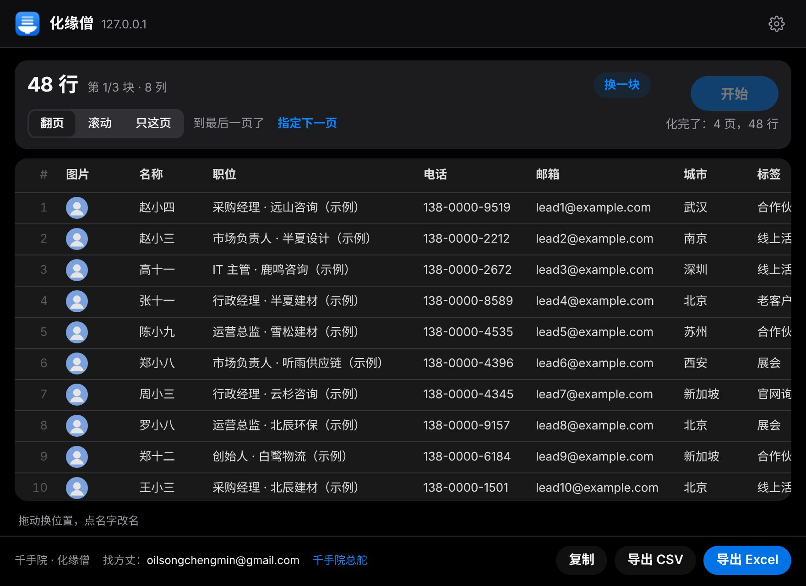

化缘僧
点一下，你去玩，贫僧挨页化缘
网页上的客户名单、销售线索、商品列表，一键抓成 Excel。
自己翻页，自己滚到底，自己起列名。
0.1.0 · Edge / Chrome · 免费
点一下，你去玩，贫僧挨页化缘
网页上的客户名单、销售线索、商品列表，一键抓成 Excel。
自己翻页，自己滚到底，自己起列名。


蓝框是它认出的名单，橙框是它找到的「下一页」。这些都是它自己干的。
你只管点「开始」，然后去倒杯水。
整页扫一遍，哪块最像名单就先抓哪块。不对？点「换一块」。
「下一页」「加载更多」自己找、自己点。找不到就指给它看，一次就记住。
往下滚才出货的网页，它边滚边收，没有新的就收工。
表头直接用；「电话：138…」这种自动拆成「电话」一列。没用的列先收起。
翻页翻回来、同一条出现两次，只留一条。
Excel、CSV 或者直接复制。列能删、能改名、能拖顺序。
要登录的后台也行：用的就是你浏览器里已经登录的那个页面。

商品列表滚到底：120 件，带图片、价格、销量。

卡片式线索翻 4 页：48 条，「电话：」「邮箱：」自动变成列名。
不上传、不联网、不注册。只读你点它的那个网页，不碰别的。
还没上商店，先用「开发者模式」装，三分钟。
edge://extensionsChrome 用 chrome://extensions没有顺手的网页？先去 示例页 试：表格、卡片、无限滚动各一页，全是假数据。